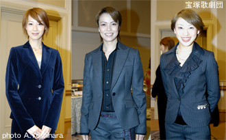
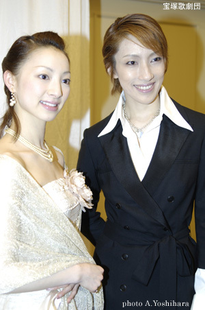
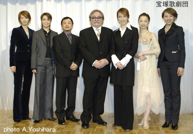

エリザベートの魅力
彩吹、音月、凰稀らも参加 雪組『エリザベート』制作発表懇親会
宝塚歌劇雪組『エリザベート』制作発表会、懇親会（1月10日）
雪組 水夏希、白羽ゆり、彩吹真央、音月桂、凰稀かなめ
『エ リザベート』制作発表の記者会見が終わると、懇親会。そちらにはフランツ・ヨーゼフの彩吹真央、ルキーニの音月桂、ルドルフの凰稀かなめも顔を揃えている。

（↑クリックすると拡大
写
真を表示）
彩吹「この たび組替えになり、新しい雪組で新しい彩吹真央が スタートします。よろしくお願いいたします」
音月「初め てこの作品を観たときには鳥肌がたちました。その感動を今度は私がお伝えしたいと思います」
凰稀「ルド ルフという大きな役をいただき、とても嬉しいです。心を込めて演じたい」
そしてリーヴァイ氏と それぞれ、抱負や質問を語り合う。
彩吹「リー
ヴァイさんは、どの曲が一番お好きですか？」
リー
ヴァイ「《ウィー
ン版》ミュージカル『エリザベート』の来日記念コンサートで指揮をしていたのですが、１曲終わるごとに、この曲が一番好きだなと思いました
（笑）」
彩吹「私は 今度で３度目、最多出場です。黒天使と、ルドルフと、ルドルフは王位につけなかったんですが、今度の（皇帝）フランツ・ヨーゼフで、私の中のルドルフは喜 んでいると思います（笑）」
音月「作曲
はどんなときにされるのですか？」
リーヴァイ「心
が音楽を出してくるときです。強制はしないんです。私ではなく心が自然に作曲をしてくれます」
音月「ル
キーニはどんなふうにスパイスになればいいでしょう」
リーヴァイ「ルキーニは舞台と観客をつなぐ役ですが、第一には物語を語ります。またエリザベートを暗殺し
ますが、それでもお客様に愛されるキャラであることを忘れないでください」
凰稀「ルド
ルフ像はどんなイメージですか？」
リーヴァイ「私
の心の中で特別な場所にいます。運命の犠牲者。２つのナンバーと短い時間の中で印象づけるのでたいへんですよ」
しばらくして私服に着替えた水夏希と白羽ゆりが登場する。さきほどのパフォーマンス について質問を受ける。

水「昨年の お正月の誓いが、“あまり緊張しないでいよう”ということだったので、今日歌った『最後のダンス』も、あまり緊張しないで歌ったつもりですが、さすがに曲の迫力 に力が入りました。髪は最初、抹茶の色でしたが、私の希望でブルーがかったグリーンになりました」
白羽「パニエ がたくさん入っているスカートで、パニエに負けないようにと思いながら動いていました。公演までに慣れるようにしたいです。お化粧は朝７時から、丸顔なの で濃いめにしていただきました。自分で少しずつでも出来るように研究したいと思っています」
スターたちを囲んで質問を浴びせるメディアの数も多く、『エリザベート』への期待を感じさせるかのように、賑わいのうちに終わった製作発表会だった。（文・榊原 和子／写真・吉原朱美）

（↑クリックすると拡大写
真
を表示）
《関連情報》
■公演情報：宝
塚歌劇雪組『エリザベート』－愛と死の輪舞－
■水夏
希「愛しかたにリアリティを」宝塚歌劇雪組『エリザベート』制作発表
■レ
ポート―ウィーン版『エリザベート』来日記念コンサート
■《ウィー
ン版》ミュージカル「エリザベート」製作発表
《予告》水夏希＆マテ・カマラス ２人の
トート対談を掲載！
トート初挑戦の宝塚歌劇『エリザベート』の水夏希と、500回もトートを演じている《ウィーン版》ミュージカル『エリザベート』のマテ・カマラス、2人の黄泉の帝王のゴージャスな顔合わせが実現しました。「２人のトート対
談」は、１月末～２月初旬頃に掲載予定です。どうぞお楽しみに。
投稿者 ベルばらKidsぷらざスタッフ 2007/01/11 22:16:00 エ リザベートの魅力 | Permalink | ト ラックバック (1)
この記事のトラックバックURL:
http://app.cocolog-nifty.com/t/trackback/165303/13441618
この記事へのトラックバック一覧です： 彩 吹、音月、凰稀らも参加 雪組『エリザベート』制作発表懇親会:
» 宝塚雪組みの今話題の内容を掲載してい
ます。 トラックバック 雪組の話
宝塚雪組みの今話題の内容を掲載しています。
いよいよ「朝海ひかる」さんが退団してしまいます。涙。 続きを読む
受信： 2007/01/13 1:15:02

 大空祐飛
大空祐飛{kind=link}
{kind=link}